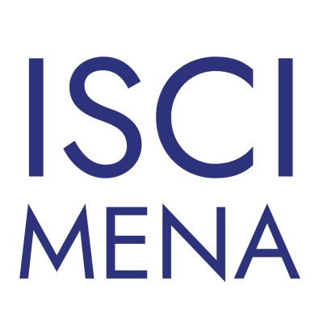
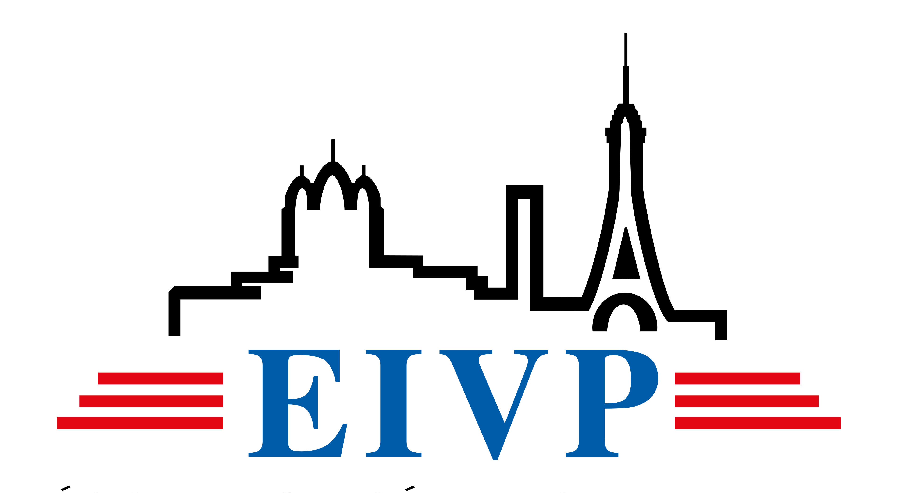
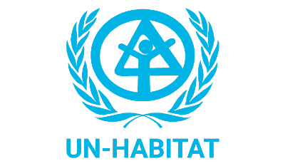
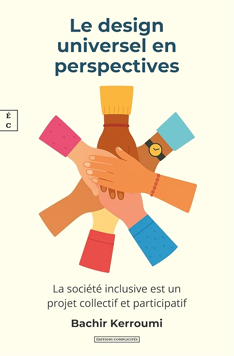
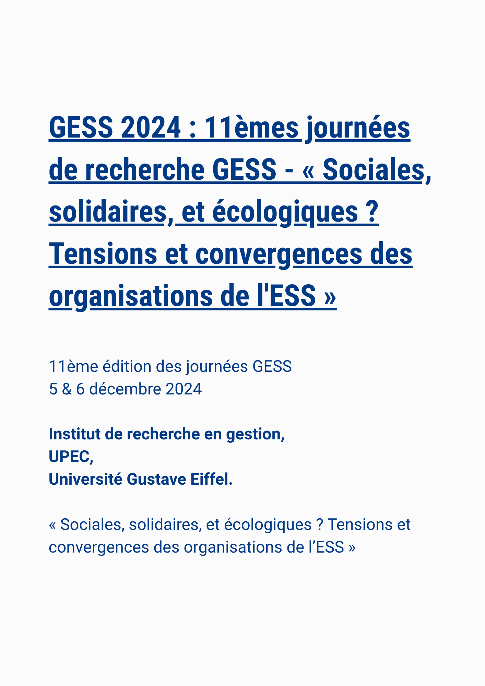

We publish research on the latest findings on sustainable urbanization.




We publish research on the latest findings on sustainable urbanization.
L’innovation sociale consiste à partir des besoins des personnes concernées pour remonter vers des solutions réalisables techniquement, pertinentes socialement, ayant un impact environnemental positif et viables sur le plan économique.